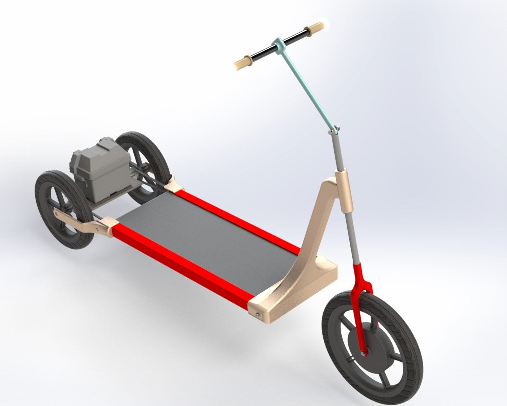

ELECTRICAL TREADMILL TRICYCLE
Competition: Dassault Systèmes Sponsored “Aakruti 2021” Team: Kenilkumar Surani, Harshal Vaholiya
Project Description
Developed an innovative electric-assisted treadmill tricycle for a national-level design competition. The concept integrates a walking treadmill mechanism with a three-wheel electric mobility platform, enabling forward propulsion through natural walking motion while incorporating electric drive assistance. The design focused on structural frame integrity, drivetrain integration, and packaging of electrical components within a compact and ergonomic layout.
Engineering Highlights
- Treadmill belt mechanism integration with rear wheel drivetrain
- Structural frame design for load distribution and rider stability
- Electric motor and battery placement optimization
- Concept-level regenerative energy integration for downhill operation
Role & Responsibilities
- Lead CAD designer – complete 3D modeling in SolidWorks
- Designed frame, treadmill housing, and rear wheel assembly
- Developed drivetrain layout and mechanical-electrical integration
- Contributed to simulation studies and competition presentation
Software Used
- SolidWorks 2021 – 3D modeling & assembly design
Visuals

